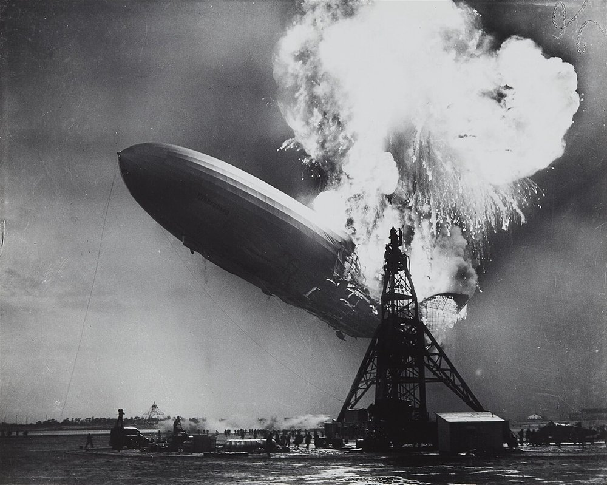

The Hindenburg on Fire at the Mooring Mast, Lakehurst, New Jersey
Sam Shere · 6 May 1937 · Photograph, black and white
In copyright. Look and learn: shown for study, not for download.
Sam Shere of International News Photos was among the many journalists at Lakehurst, New Jersey, on 6 May 1937 for the landing of the year's first transatlantic passenger flight by Zeppelin. The Hindenburg caught fire at 7:25 in the evening. Shere had no time to raise the camera to his eye and shot from the hip. Four newsreel teams filmed the fire as well.